Round 13 · geological exploration
Working caves, server-owned extraction, the existing field kit, organic detached rocks, and restrained material detail. Technical report · Raw performance summary
Comparison captures use seeds 42 and −43 at t70. CSS viewport 1280 × 720; actual render target 1600 × 900; High, antialiasing and shadows enabled. Short 300-frame samples are local measurements, not a hardware-independent guarantee.
| View | Mean before → after | p95 before → after | Mean change |
|---|
| Coast W20 | 34.51 → 35.60 ms | 42.4 → 43.9 ms | +3.16% |
| Volcanic V06 | 39.46 → 41.37 ms | 48.1 → 49.0 ms | +4.84% |
Surface detail · western ledges
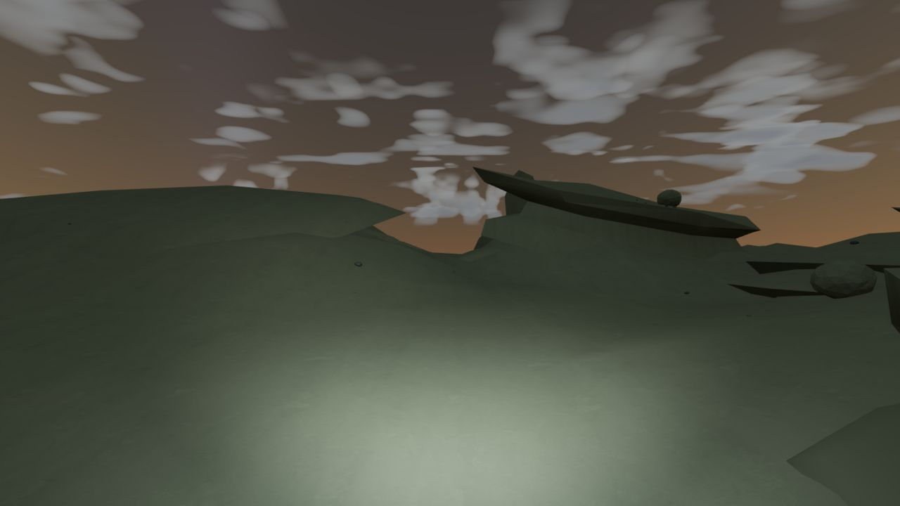
Before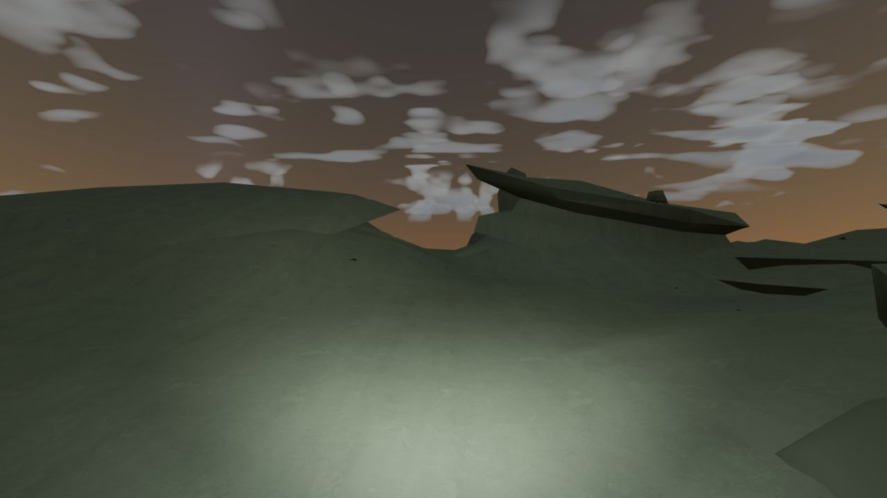
After · same camera, palette, weather and established major formationsRock distribution · coastal outcrop
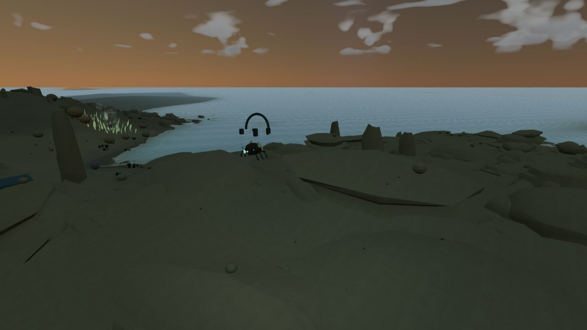
BeforeAfter · same camera, palette, weather and established major formationsRock distribution · outer terrain
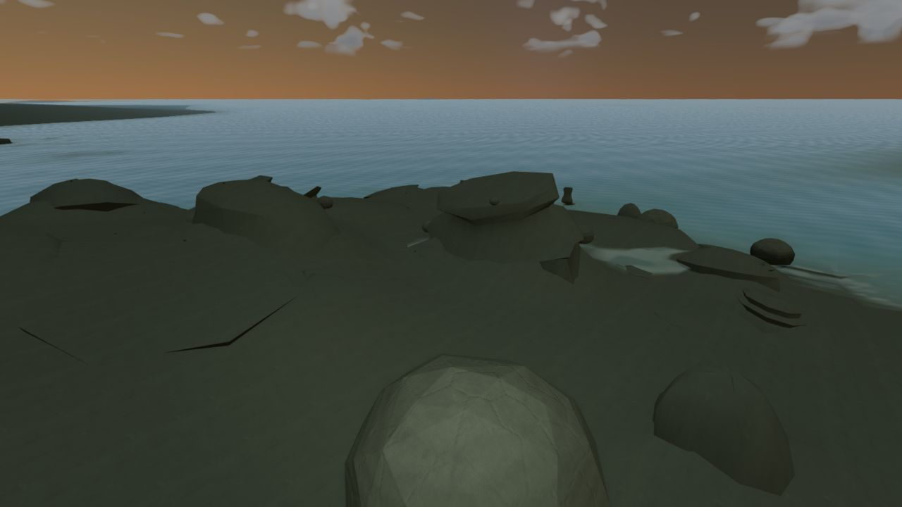
Before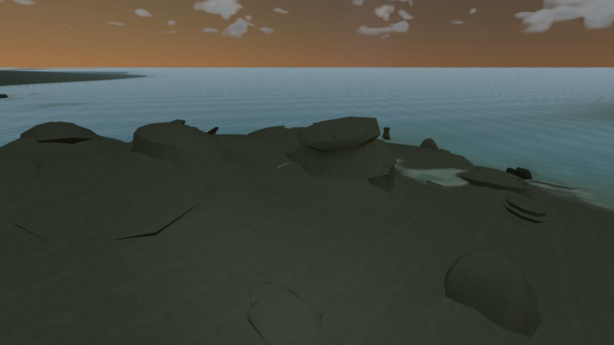
After · same camera, palette, weather and established major formationsVolcanic outcrop
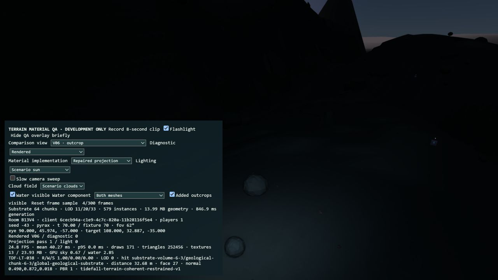
Before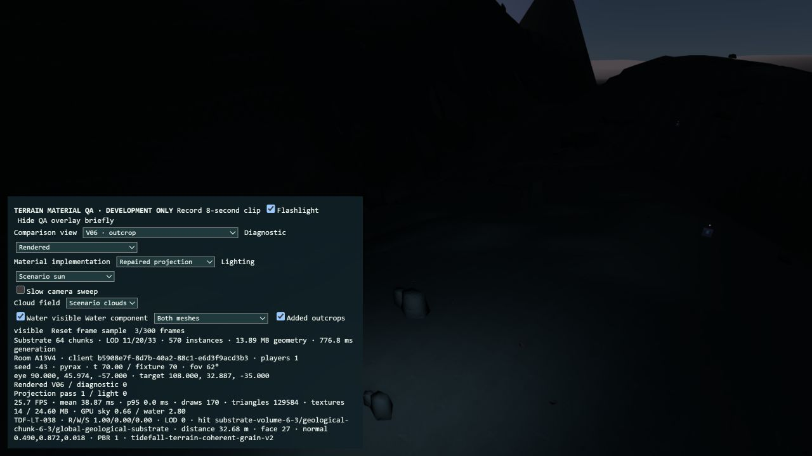
After · same camera, palette, weather and established major formationsActual cave traversal and extraction
These are real character-controller runs in local QA rooms with health, oxygen and temperature protected. Entrance/interior staging is disclosed in the report. Clips record the WebGL canvas; inventory is documented separately in screenshots.
Coast · real descent below the surfaceVolcanic chamber · actual extraction pulsesVolcanic cave · real climb to the surfaceCoast · corrected wall extractionCoast · real climb back to the surface with both samples retainedVolcanic entrance, descent and illuminated passage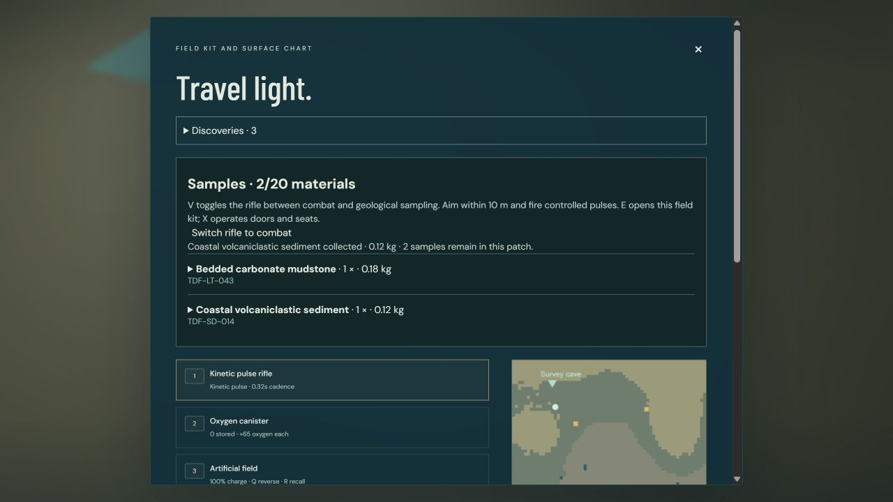
Two distinct coastal materials in the original inventory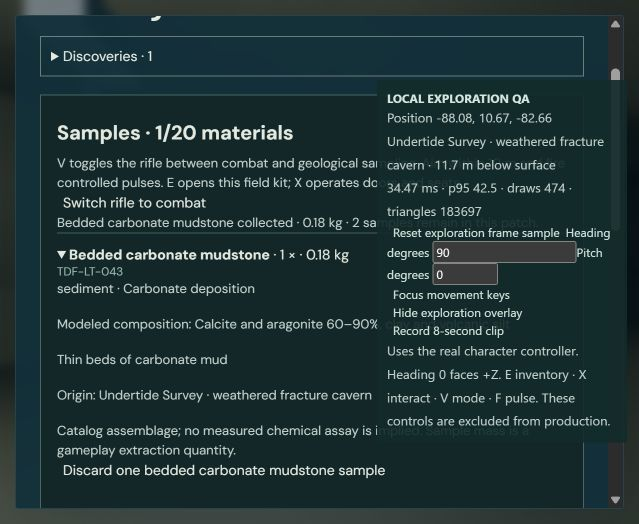
Coastal wall sample after correction of the physical hit lookup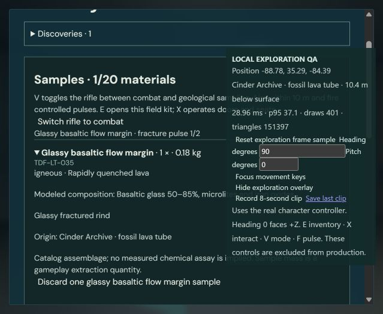
Volcanic sample in the existing field kit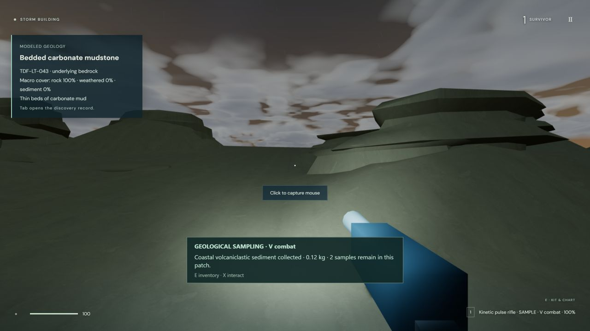
Coastal exit · sample retained Laboratory lighting
The tested fixed view is stable; the exact user-reported intermittent artifact was not reproduced consistently. The changes remove fixture self-shadowing and sharp metallic response, and slow abrupt flashlight exposure release. Power and range remain unchanged.
Before · slow turnAfter · slow turnBefore · stationaryAfter · stationaryBefore · flashlight offAfter · flashlight off
Before · shadows-off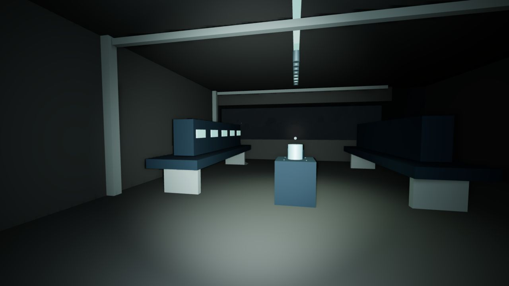
After · shadows-offBefore · emission-off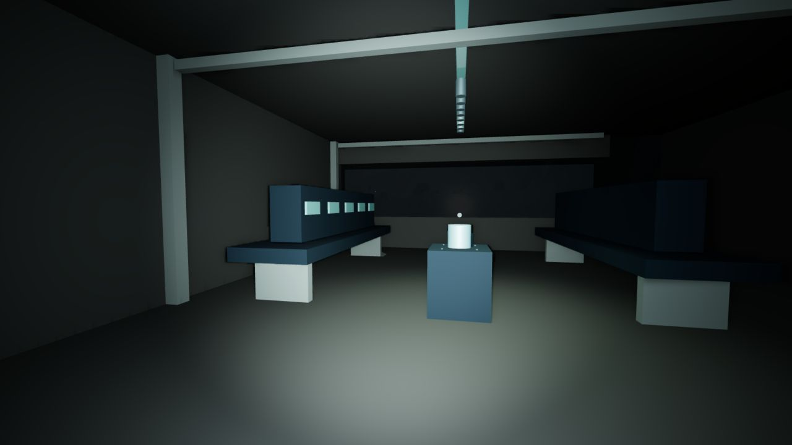
After · emission-off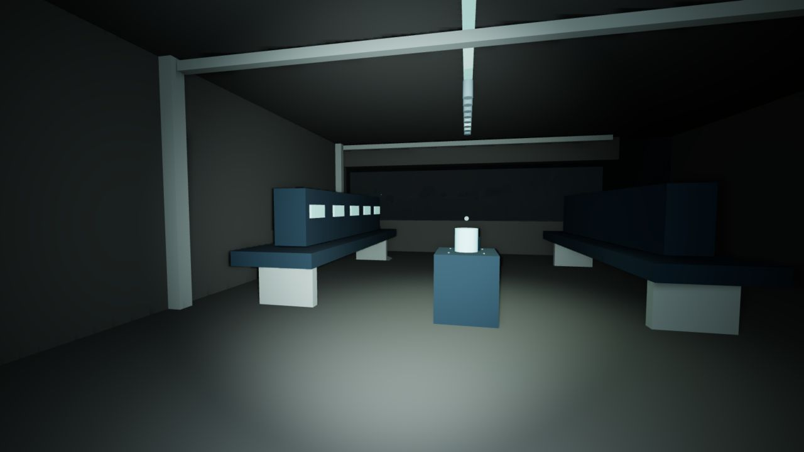
Before · diffuseAfter · diffuse 194 passing Tidefall tests · Typecheck · Production build